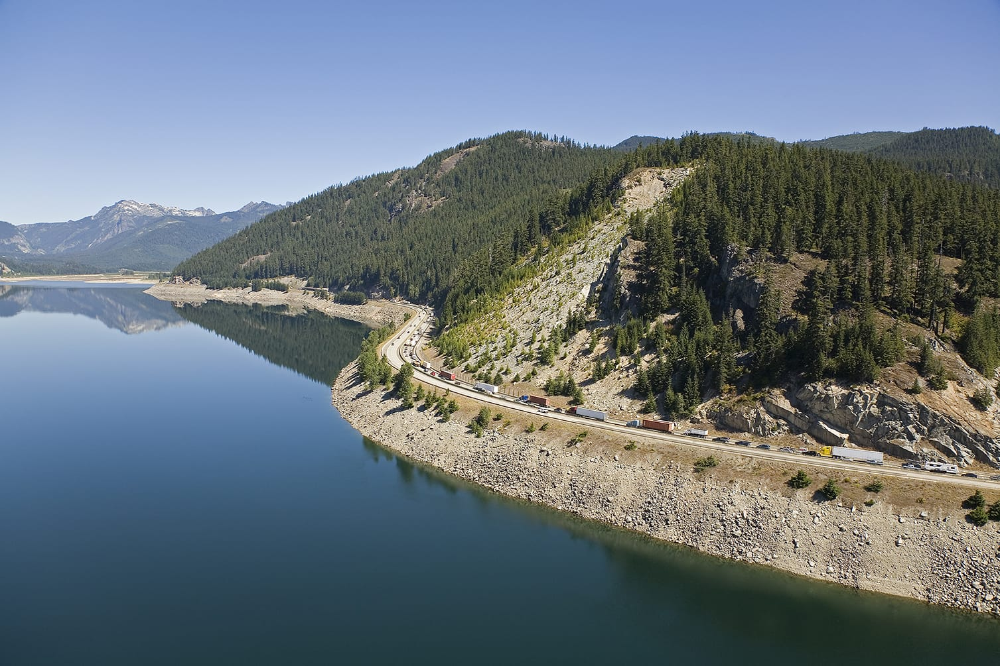
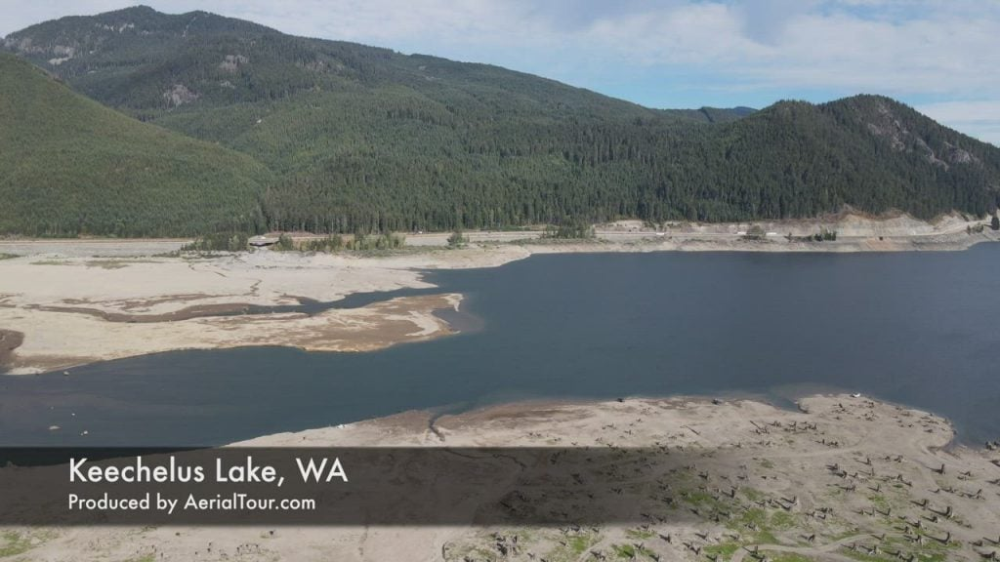
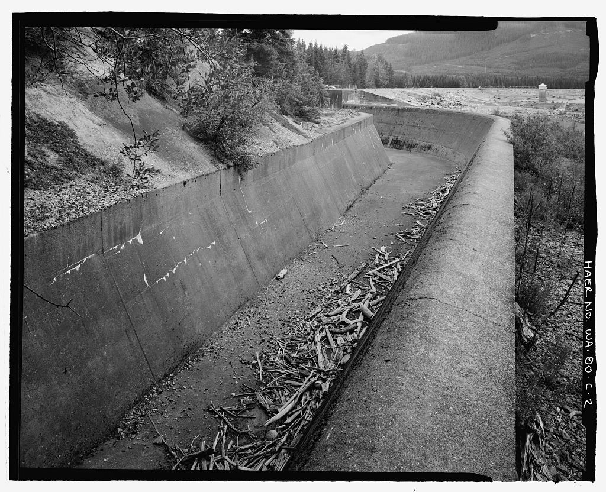
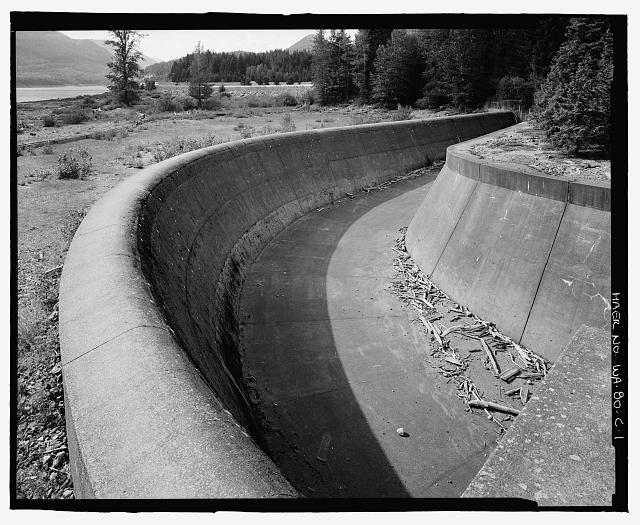
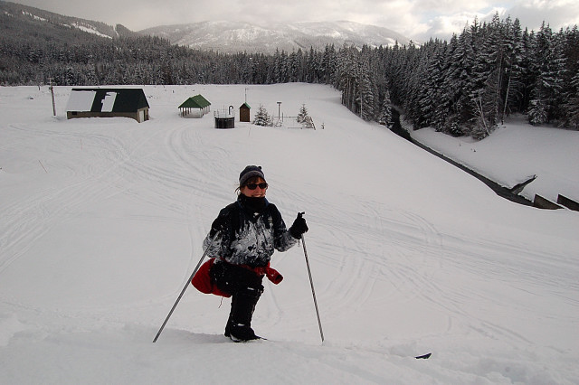
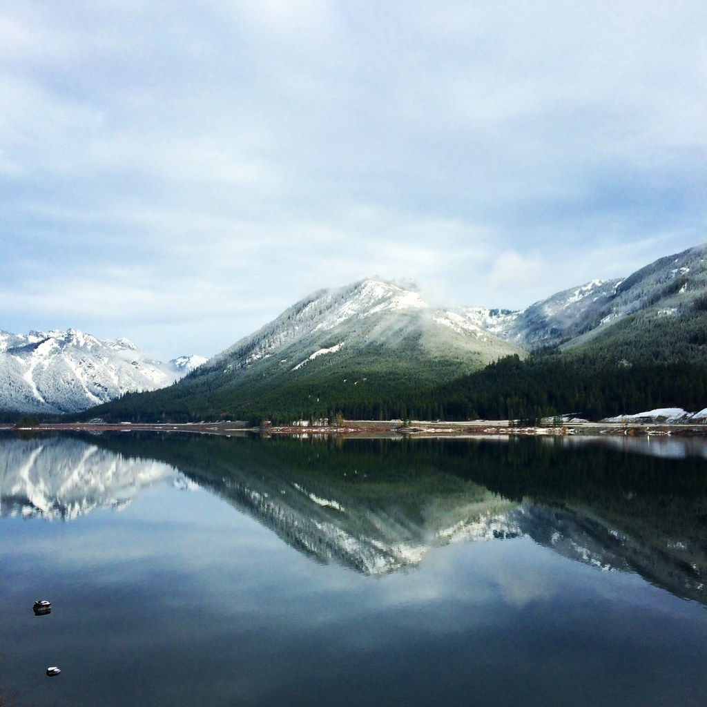
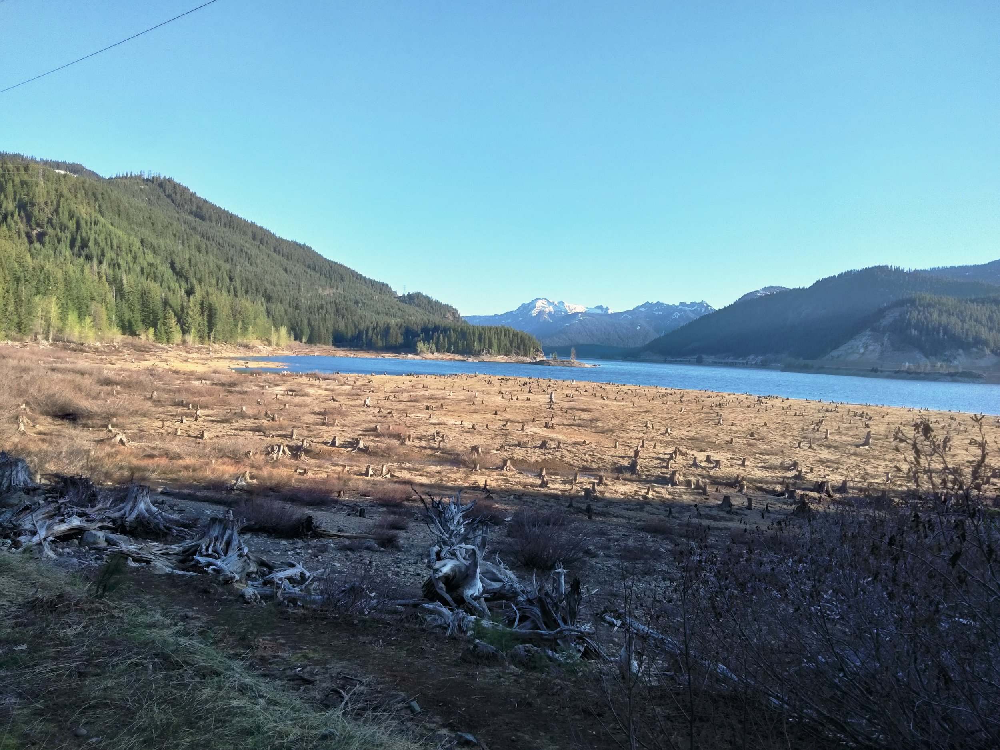
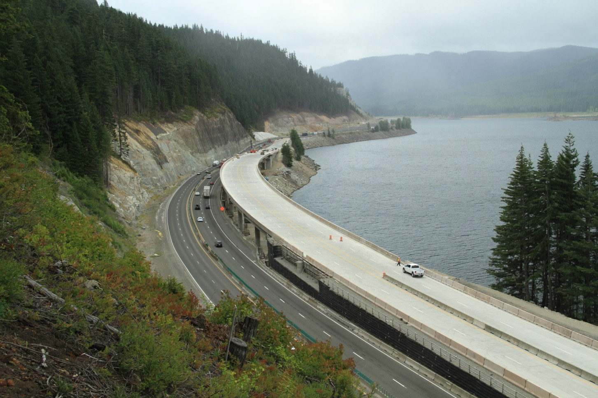
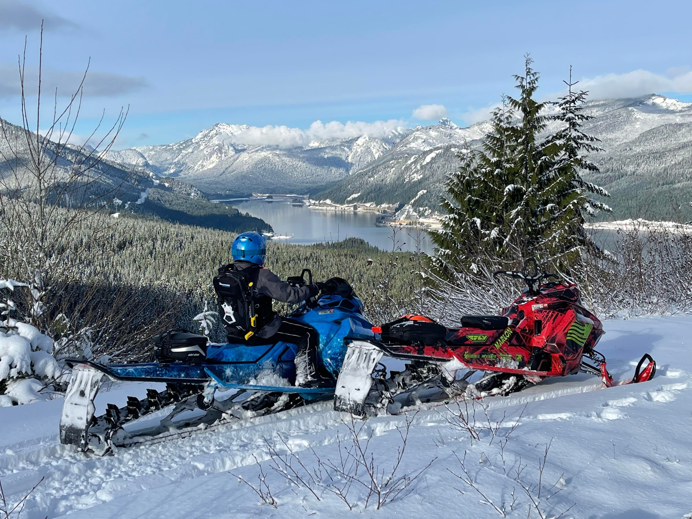
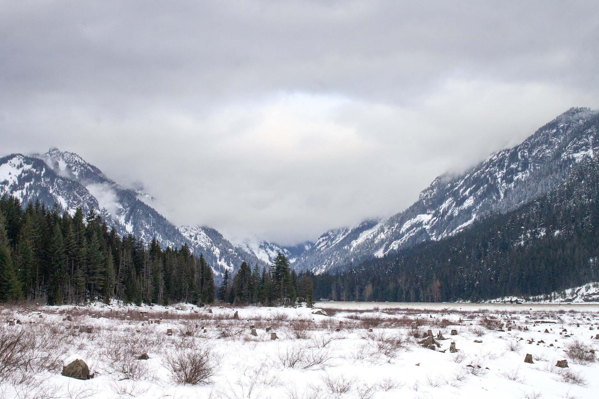

Lake Keechelus（发音：/ˈkɛtʃələs/）位于华盛顿州（Washington State）基特塔斯县（Kittitas County），海拔 767 米（2,517 英尺），湖面最长约 6.8 公里，最宽约 1.6 公里。它是喀斯喀特山脉（Cascade Range）中 I-90 沿线三座大型高山湖泊中最西端的一座，另外两座依次向东为 Kachess Lake 和 Cle Elum Lake。
I-90 翻越斯诺夸尔米山口（海拔 920 米）后，沿湖东岸紧贴山壁延伸。湖泊是雅基马河（Yakima River）的源头，雅基马河向东汇入哥伦比亚河（Columbia River）。

来源：Wikipedia "Keechelus Lake"，https://en.wikipedia.org/wiki/Keechelus_Lake ✅ 中高可靠性
"Keechelus"源自一个原住民词汇，意为"鱼少"（few fish）。这一命名与相邻的 Kachess Lake 形成对照——"Kachess"意为"鱼多"（more fish）。两个名字并排立在地图上，像是一份简短的渔业记录，直接反映了原住民对这片水域的观察。
这片土地的传统居民是基特塔斯人（Kittitas people），萨哈普廷语（Sahaptin）称其为 Pshwánapam，意为"岩石之民"。他们是雅基马族（Yakama）的近亲，有时被视为雅基马族的一个分支，传统领地覆盖基特塔斯河谷（Kittitas Valley）、纳奇斯河谷（Naches Valley）及雅基马河（Yakima River）上游地区，Lake Keechelus 位于其传统领地范围之内。
基特塔斯人以斯诺夸尔米山口（Snoqualmie Pass）和斯坦皮德山口（Stampede Pass）为通道，在喀斯喀特山脉两侧的高原族群与海岸萨利希族群（Coast Salish）之间扮演贸易中间人角色。1814 年，毛皮商人亚历山大·罗斯（Alexander Ross）进入基特塔斯河谷时，遭遇了一场规模庞大的部落聚会。他在回忆录中写道，营地绵延六英里，男丁不下三千，马匹更是三倍于此。19 世纪 60 年代，白人定居者大批涌入基特塔斯河谷，基特塔斯人随后被迁移至雅基马印第安保留地（Yakama Indian Reservation）。
来源说明：名字含义来自 Wikipedia "Keechelus Lake"，原文为"a Native American term"，未明确指定语族。原住民背景及 Alexander Ross 引文来自 Wikipedia "Kittitas people"（https://en.wikipedia.org/wiki/Kittitas_people），该条目引用了 Ross (1855) The Fur Hunters of the Far West 原始文字。
Lake Keechelus 的湖盆由第四纪冰川作用塑造。大坝附近的地质调查显示，河谷底部覆盖着两层冰川沉积物：较老的冰碛层（Quaternary Glacial Drift）和其上的冰水砂砾层（Quaternary Outwash Sediments）。基岩为纳奇斯组（Naches Formation）的流纹岩（rhyolite），出露于溢洪道左侧。在人类干预之前，这里已是一座天然高山湖泊。
来源：U.S. Bureau of Reclamation，"Keechelus Dam"，https://www.usbr.gov/projects/index.php?id=294 ✅ 极高可靠性
雅基马河谷（Yakima Valley）年降水量不足 178 毫米（7 英寸），土壤肥沃却极度干旱。早在 1864 年，定居者便挖出了第一条灌溉渠。然而春季融雪洪峰过后，河流迅速枯竭，农业用水无从保障。
1902 年 6 月，美国国会通过《垦务法》（Newlands Reclamation Act，又称 National Reclamation Act of 1902），由西奥多·罗斯福总统（Theodore Roosevelt）签署，授权联邦政府在西部干旱地区兴建灌溉工程。1903 年 1 月，雅基马县（Yakima County）居民联名向内政部长请愿，要求联邦介入。同年，美国垦务局（U.S. Bureau of Reclamation）启动调查，并于 1905 年 12 月正式批准雅基马工程（Yakima Project）。
来源：U.S. Bureau of Reclamation 100周年新闻稿（2005），https://www.usbr.gov/newsroomold/newsrelease/detail.cfm?RecordID=9202 ✅；《垦务法》细节经 Wikipedia "Newlands Reclamation Act"（https://en.wikipedia.org/wiki/Newlands_Reclamation_Act）核实 ✅
Keechelus 大坝（Keechelus Dam）建于天然湖泊的出水口处，1917 年竣工。这是一座土石坝（earthfill dam），坝高 39 米（128 英尺），用料 684,000 立方码。大坝将湖泊的有效蓄水量提升至 157,900 英亩·英尺（约 1.948 亿立方米），使其成为雅基马工程六座水库之一，专门调蓄春季融雪径流，供雅基马河谷全季农业灌溉使用。



1998 年，垦务局发现大坝存在管涌（piping）和内部侵蚀风险，随即限制水位运行。2002 至 2003 年间，大坝经历了大规模安全改造，包括重建坝体断面、在右坝肩施工膨润土泥浆截水墙（bentonite slurry cutoff wall）、沿坝全线修建排水系统。2004 年初，运行限制解除。
来源：U.S. Bureau of Reclamation，"Keechelus Dam"，https://www.usbr.gov/projects/index.php?id=294 ✅ 极高可靠性
水库建成前后，另一条历史线索也在湖边展开。芝加哥、密尔沃基、圣保罗及太平洋铁路（Chicago, Milwaukee, St. Paul and Pacific Railroad，俗称"密尔沃基路"，Milwaukee Road）曾沿湖西岸行驶，经由斯诺夸尔米隧道（Snoqualmie Tunnel，长 3.625 公里）穿越喀斯喀特山脉，隧道东口位于湖西北岸附近的 Hyak 站。
密尔沃基路于 1909 年开通至塔科马（Tacoma）的太平洋延伸线，最初翻越斯诺夸尔米山口，1914 年隧道建成后改走隧道。1937 年，铁路公司在隧道东口附近建造了密尔沃基滑雪场（Milwaukee Ski Bowl），运营至 1950 年。密尔沃基路历经多次破产，1980 年彻底停运，路基现已改建为铁马州立公园（Iron Horse State Park）步道，隧道亦包含其中，今日徒步者和骑行者仍可穿行其间。

来源：Wikipedia "Keechelus Lake"（https://en.wikipedia.org/wiki/Keechelus_Lake）；隧道建设年份经 Wikipedia "Snoqualmie Tunnel"（https://en.wikipedia.org/wiki/Snoqualmie_Tunnel）交叉核实 ✅
作为水库，Lake Keechelus 的水位随季节和年份大幅波动。春季融雪期蓄水，夏秋灌溉季放水，枯水年水位骤降，湖底的枯木桩和浸水痕迹便会大片裸露——这正是驾车经过 I-90 时最容易察觉到"水库感"的时刻。


每年冬季，Lake Keechelus 周边积雪深厚，湖面有时结冰，成为雪鞋徒步（snowshoeing）和越野滑雪（cross-country skiing）的热门目的地。斯诺夸尔米山口（Snoqualmie Pass）的滑雪场就在湖的西北方向数公里处。


随着气候变化加剧雅基马流域（Yakima Basin）的干旱压力，垦务局与华盛顿州生态局（Washington State Department of Ecology）联合推进"Keechelus 至 Kachess 调水工程"（Keechelus-to-Kachess Conveyance，KKC）。该工程计划在 Keechelus 大坝下游引水，经新建隧道输送至 Kachess 水库，目的有二：一是在特定时段削减大坝下游洪峰，为奇努克鲑鱼（Chinook salmon）和硬头鳟（steelhead）提供产卵育幼栖息地；二是在干旱年份配合 Kachess 抗旱抽水站（Kachess Drought Relief Pumping Plant，KDRPP）加速 Kachess 水库蓄水。2019 年 4 月 26 日，垦务局太平洋西北区域主任签署了该工程的决策记录（Record of Decision）。
来源：U.S. Bureau of Reclamation，"Keechelus-to-Kachess Conveyance Project"，https://www.usbr.gov/pn/programs/eis/kkc/index.html ✅ 极高可靠性
| 来源 | 性质 | 可靠性 |
|---|---|---|
| Wikipedia "Keechelus Lake" | 百科条目，引用 Phillips 1971（UW Press）等学术出版物 | ✅ 中高 |
| Wikipedia "Kittitas people" | 百科条目，引用 Ross (1855) 原始文献及语言学资料 | ✅ 中等 |
| Wikipedia "Snoqualmie Tunnel" | 百科条目，引用多个历史来源 | ✅ 中高 |
| Wikipedia "Newlands Reclamation Act" | 百科条目，引用国会立法原文 | ✅ 中高 |
| U.S. Bureau of Reclamation "Keechelus Dam" | 联邦政府官方页面，大坝建设运营方 | ✅ 极高 |
| U.S. Bureau of Reclamation 100周年新闻稿（2005） | 联邦政府机构新闻稿 | ✅ 高 |
| U.S. Bureau of Reclamation "KKC Project" | 联邦政府官方项目页面 | ✅ 极高 |
| ENR Northwest，I-90 工程报道（2020） | 工程行业权威媒体 | ✅ 高 |
| 图片 | 来源 | 可靠性 |
|---|---|---|
| 沿 I-90 望向湖面（封面） | WSDOT via Mountains to Sound Greenway Trust | ✅ 高（州政府机构） |
| 大坝溢洪道（历史） | 美国国会图书馆 / HAER | ✅ 极高（联邦档案） |
| 大坝溢洪道全景（历史） | 美国国会图书馆 / HAER | ✅ 极高（联邦档案） |
| Iron Horse Trail | 华盛顿步道协会（WTA） | ✅ 中高 |
| I-90 拓宽工程施工 | Clark Construction，经 ENR 核实 | ✅ 中高 |
| 航拍俯瞰 | Aerial Tours 商业网站 | ⚠️ 内容真实，无署名 |
| 低水位湖岸 | Northwest Portal 个人博客 | ⚠️ 内容真实，无署名 |
| 冬季雪景 | Northwest Portal 个人博客 | ⚠️ 内容真实，无署名 |
| 雪鞋徒步 | Pines and Vines 个人博客 | ⚠️ 内容真实，无署名 |
| 大坝坝顶步道 | Celebrate Big! 个人博客 | ⚠️ 内容真实，无署名 |